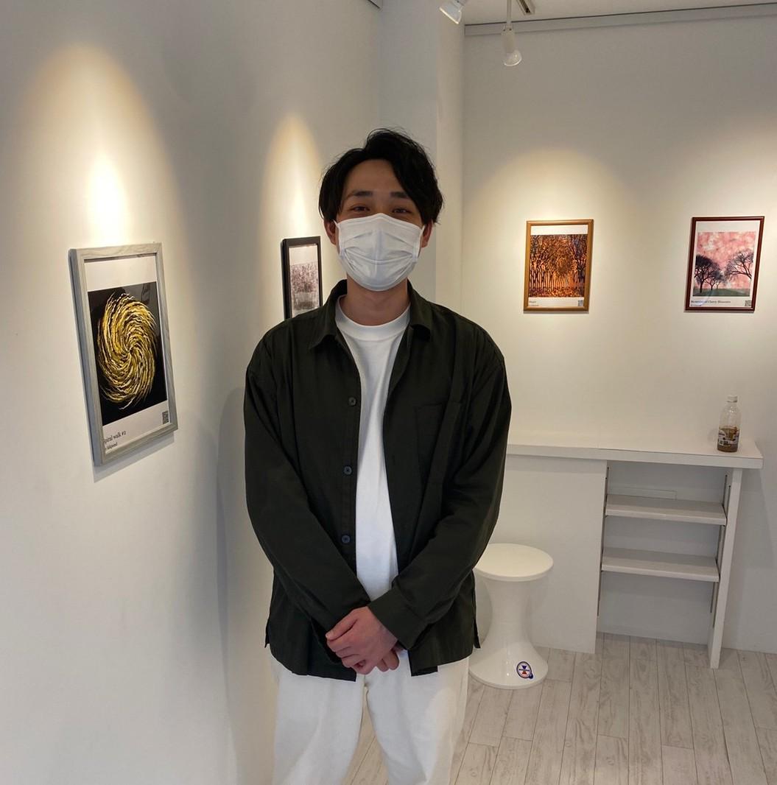

Kouta Kikuchi
1994年，東京都生まれ． 2013年，明星大学情報学部入学．4年間プログラミングを学ぶなかで，クリエイティブコーディングやフィジカルコンピューティングに出会い，インタラクティブなコンピューターアートへの興味を持つ．卒業後，同大学の大学院情報学研究科情報学専攻博士前期課程に入学．HCI(Human Computer Interaction)を専門にメディアアートやインスタレーションなどArt＆Scienceを目指した研究に着手する． 2019年情報学研究科情報学専攻博士前期課程を首席で修了後，同大学大学院情報学研究科情報学専攻博士後期課程に入学し現在に至る．現在，影をインタフェースとしたKUI(Kage User Interface)のHCIにおける応用方法の研究を中心に，拡張現実，デジタルファブリケーション分野での研究も行なっている． 芸術科学会，情報処理学会，バーチャルリアリティ学会会員

Education | 学歴
- 2023年 明星大学大学院 情報学研究科 情報学専攻 博士後期課程 修了(情報学)
- 2019年 明星大学大学院 情報学研究科 情報学専攻 博士後期課程 入学
- 2019年 明星大学大学院 情報学研究科 情報学専攻 博士前期課程 修了
- 2017年 明星大学 情報学部 情報学科 卒業
- 2013年 明星大学 情報学部 情報学科 入学
Award&Achievement | 受賞歴&業績
- 2022年 芸術科学会 NICOGRAPH2022 デモ発表賞(共著)
- 2022年 明星大学大学院2022年度 博士特待生
- 2020年 日本学生支援機構 業績優秀者認定内定(博士)
- 2019年 芸術科学会 NICOGRAPH2019 ポスター発表賞(共著)
- 2019年 芸術科学会 NICOGRAPH2019 優秀論文賞
- 2019年 日本学生支援機構 業績優秀者認定(修士)
- 2019年 明星大学大学院2018年度 修士特待生
- 2018年 The Socity of Art and Science NICOGRAPH International2018 Best Poster Award
- 2017年 芸術科学会 NICOGRAPH2017 優秀論文賞
Exhibition&Workshop | 展示&ワークショップ